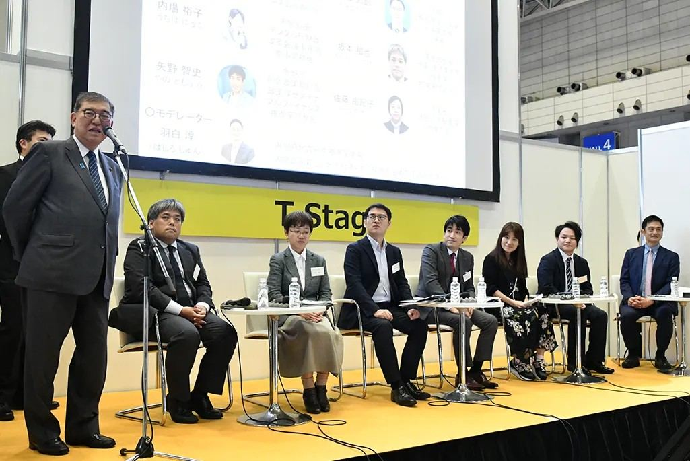

Conferences · Tech
CEATEC 2027
- Dates
- –
- Venue
- Makuhari Messe
- Location
- Chiba, Japan
- Format
- In-person
- Category
- Tech
- Industry
- Digital technology / electronics
- Organiser
- CEATEC Organizing Committee (JEITA)
- Expected attendance
- 112,373
- Official website
- https://www.ceatec.com/en/
About
The 2027 page gives the dates; Makuhari Messe is the long-standing venue (2026 edition there), the 2027 hall is not yet named. Dates are local to the host city (Japan Standard Time, UTC+9).
Topics: AI, IoT, electronics, Society 5.0, startups.
Official CEATEC site: 'CEATEC 2026, Wrapped Up on a High Note - A total of 112,373 registered visitors attended the exhibition over the four-day period' (2026 edition).